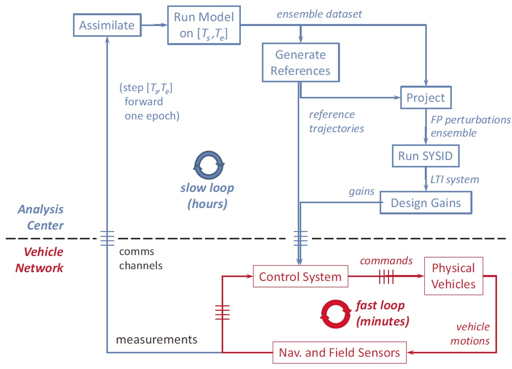
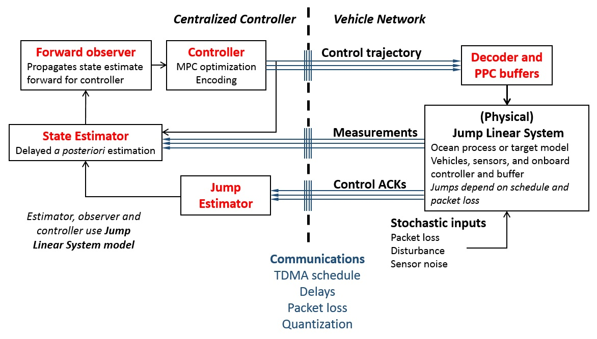
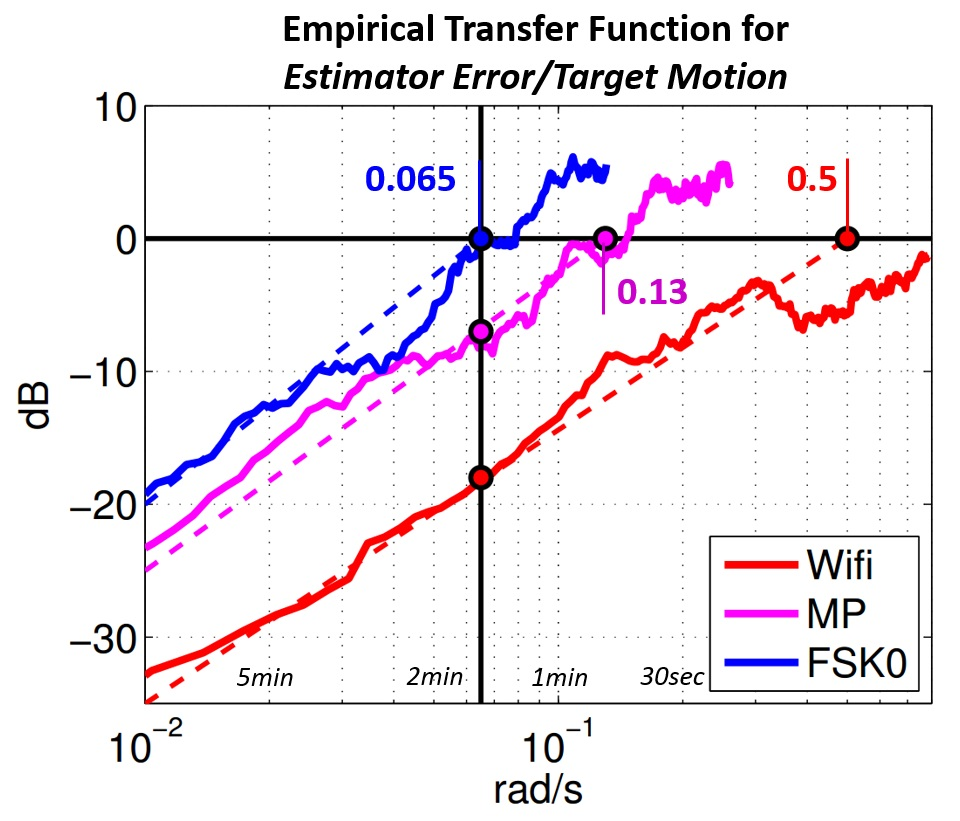
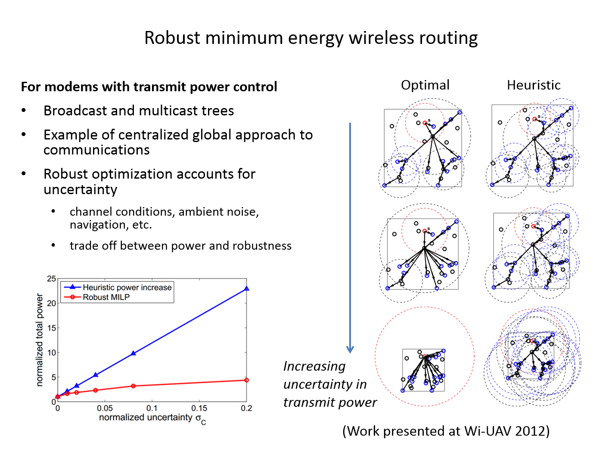
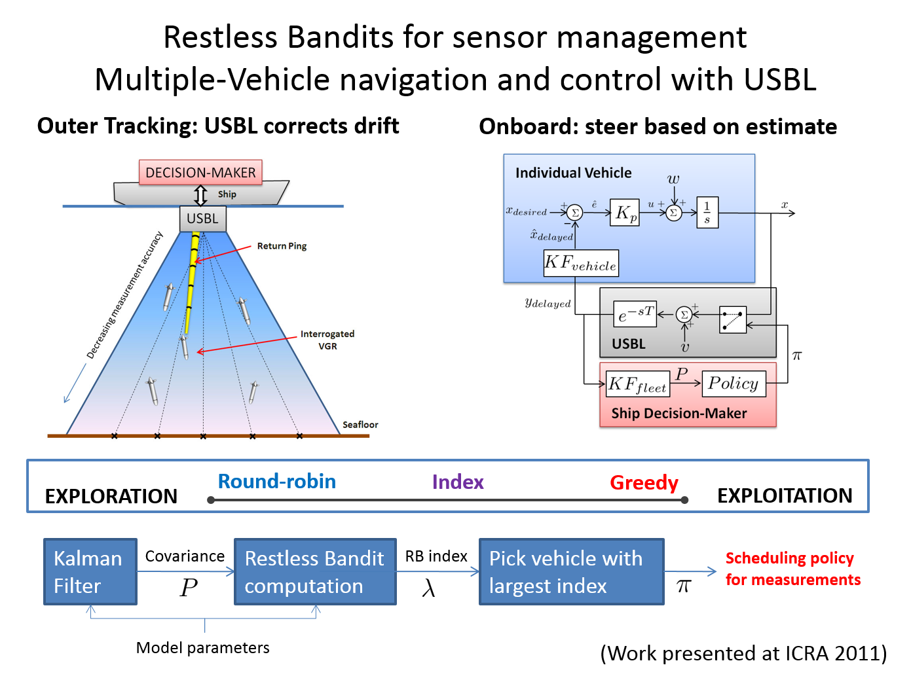

Marine robotic vehicle platforms and sensor technology are becoming mature, making multiple-vehicle operations an attractive solution for tracking dynamic underwater targets as well as increasing the spatial and temporal resolution of oceanographic surveys. Collaboration between vehicles promises new capabilities and improved performance, but requires communication. Underwater, wireless communication over distances beyond about one hundred meters is almost exclusively accomplished via acoustics, which suffer from packet loss, low data rates and long delays. These limitations have traditionally limited the use of acoustic communications in high-performance, real-time tasks.
My research considers design of real-time control systems for fleets of vehicles collaborating via acoustic communications. This involves posing relevant problems in a framework suitable for closed-loop control, as well as developing and implementing communication-constrained control algorithms.
Along with a team of students and engineers, I have worked to develop a small-scale acoustics and control testbed using autonomous kayaks towing acoustic modems (we use the WHOI MicroModem). We run experiments primarily in the Charles River from the MIT Sailing Pavilion, with occasional trips to Boston Harbor and Woods Hole. More information on this system can be found on our wiki

The behavior of ocean fronts and similar structures such as plumes and filaments has long been of interest to oceanographers. Modeling of ocean fronts at the mesoscale and smaller remains challenging , and hence has emerged as a primary focus area for mobile sensing systems. While single vehicles have executed measurement-driven trajectories and ocean modeling is increasingly integrated with vehicle path-planning, multi-vehicle coordination under communication constraints has not yet been integrated with global model information until now.
This work develops a unique multi-vehicle frontal point description and control methodology for tracking and pursuit of dynamic ocean features at improved temporal resolution compared to existing methods. Our approach fits as an intermediary between high-bandwidth vehicle flight control (at the seconds time scale) and lower-frequency procedures in numerical ocean modeling, assimilation, and adaptive sampling. A new projector algorithm enables direct linearization of ocean model forecast uncertainty in vehicle coordinates via a forward model technique, giving a clean stochastic system representation suitable for closed-loop control. The methodology accurately decomposes spatial and temporal variations, exploits coupling between sites along the feature, and allows for advanced methods in communication-constrained control. Simulations with three example datasets successfully demonstrate the proof-of-concept.
Reed, B., and F. Hover, "Tracking Ocean Fronts with Multiple Vehicles and Mixed Communication Losses", IEEE/RSJ International Conference on Intelligent Robots and Systems (IROS), 2013. (Link to full text at IEEE Xplore)
Reed, B. and F. Hover, “Oceanographic Pursuit: Networked Control of Multiple Vehicles Tracking Dynamic Ocean Features,” Methods in Oceanography, Special Issue on Autonomous Vehicles, May 2014. (Link to Open Access pdf)

Acoustic communication links are a crucial component in the feedback loop for underwater multi-vehicle systems operating under centralized estimation and control. A multi-node system using acoustic communications is subject to multiple-access constraints; the most straightforward approach is interference-free time-division multiple access (TDMA) scheduling. This results in a multi-rate control system, where measurements arrive at the estimator at different times, and control arrives to an individual vehicle at different times. Packet delays resulting from acoustic propagation time and transmission time are (nearly) deterministic but substantial, especially if relays must be used. Stochastic packet loss complicates control design further.
In this work, we develop a framework for multi-vehicle control and estimation with control, measurement, and acknowledgment packets all subject to schedules, delays and packet loss. The modular framework is built around a jump linear system (JLS) description that includes Packetized Predictive Control (PPC), a technique that combines the receding horizon optimization of Model Predictive Control with buffering at the actuator. Integration of these elements enables synthesis of a novel technique for estimation using delayed and lossy control acknowledgments---a desirable and practical capability of fielded systems that has not been considered in work to date. The unified formalism we develop helps maintain clean notation and system description across different multi-vehicle systems and communication scenarios. The modular framework will allow future improvements or modifications to specific blocks without the need to develop an entire system from scratch. Simulations and field experiments demonstrate the effectiveness of the methods, including the benefits to utilizing delayed and lossy control acknowledgments.
Code on GitHub
Feature story by Oceans at MIT!
In this work we address through experiments the capability of acoustics to sustain highly dynamic, multi-agent missions, in particular range-only pursuit in a challenging shallow-water environment. Our key experiment in joint localization and pursuit has two mobile agents sharing sensor information and commands through acoustic links. We make scalar range measurements at each agent, and thus tracking is impossible without their coordination. The mobile agents attempt to stay close to the target, and in a formation conducive to good sensor performance. Estimation and control are tightly coupled in this mission, allowing us to study the effects of packet loss, quantization, delays and scheduling on the frequency response of the integrated closed-loop system.
We carried out extensive shallow-water field tests, comparing performance when using full-sized packets (“FSK0”) with negligible quantization and a 23s cycle, RF wireless communication (“WiFi”) with a 4s cycle and negligible quantization, and 13-bit mini-packets (“MP”) with a 12s cycle. With 13-bit mini-packets, we employed logarithmic quantization for 3-bit range measurements. Recalling our broad objective to achieve dynamic control through mobile acoustic networks, it is revealing to ask what effective closed-loop estimation bandwidth was achieved. A direct FFT-based empirical transfer function for the estimation error divided by target motion shows that the bandwidth of the system using mini-packets exceeds that of the system using FSK0 packets, despite the heavy quantization. Our results are the first quantitative analysis of tracking bandwidth reported in multi-vehicle marine robotics literature, and show definitively that aggressive dynamic control of multi-agent systems underwater is tractable today.
Reed, B., Leighton, J., Stojanovic, M. and F. Hover, "Multi-Vehicle Dynamic Pursuit using Underwater Acoustics", International Symposium on Robotics Research (ISRR), December 2013. (Full Text, PDF)
While network routing and topology decisions are usually made with decentralized algorithms, centralized optimization-based approaches bring the possibility of integrated design of communication and control. This work considers a robust formulation of a mixed-integer linear programming approach to wireless multicast routing.
Reed, B., Stojanovic, M., Mitra, U. and F. Hover, "Robust Minimum Energy Wireless Routing for Underwater Acoustic Communication Networks," IEEE Globecom 2012 Workshop on Wireless Networking and Control for Unmanned Autonomous Vehicles: Architectures, Protocols and Applications (Wi-UAV), 2012. (Link to Full Text at IEEE Xplore)
This research studied methods for accurately and efficiently deploying large numbers of sensors to the seafloor. Along with collaborators at Schlumberger-Doll Research, we developed a novel Vertical Glider vehicle concept which navigates with USBL from a ship and steers towards its target landing location. A major challenge is that the USBL is a finite resource to be shared among many vehicles. To address this, we developed a sensor allocation algorithm based on Restless Bandit theory that computes a measurement policy and aids in the design of deployment schedules.
Reed, B., "Multiple-Vehicle Resource-Constrained Navigation in the Deep Ocean," Masters Thesis, Massaschusetts Institute of Technology, 2011. (Full Text, PDF)
Reed, B., C. Ambler, J. Guerrero, and F. Hover, "Vertical Glider Robots for Subsea Equipment Delivery," IEEE International Conference on Robotics and Automation (ICRA), Shanghai, May 2011. (Link to Full Text at IEEE Xplore)
Guerrero, J, Hover, F., Ambler, C., Reed, B. and R. Hummel, “Vertical Glider Robot,” US Patent US8397657 B2, August, 2010.
In the summer of 2007 I was an intern with Dr. James Bellingham at MBARI. I worked on a conceptual design of an environmental sampler as a nose payload for the Long Range AUV. My intern paper can be found here. In the summer of 2008 I returned to the group and worked primarily on buoyancy engine design.